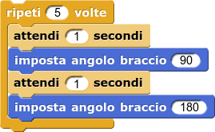
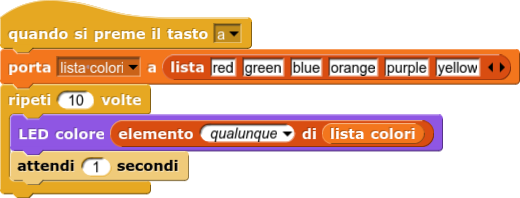
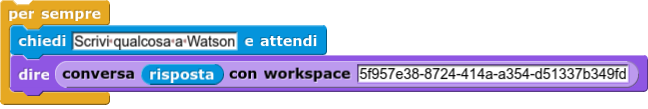
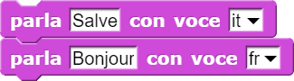

Imposta il servo motore del braccio all'angolo specificato dal parametro numerico.

Questo script di esempio dice al TJBot di muovere il braccio in alto e in basso per 5 volte, come se stesse salutando qualcuno.
Accende il LED sulla testa del TJBot del colore specificato. Il parametro deve essere testuale e scritto in inglese (esempi: "green", "red", "blue", "yellow"). Il colore "black" causa lo spegnimento del LED.

In questo esempio, il LED si accende ripetutamente di un colore scelto a caso tra una lista di colori.
Invia una parola o frase, scritta come primo parametro (nel primo spazio vuoto), allo spazio di lavoro (workspace) il cui codice identificativo va copiato e incollato come secondo parametro. Questo blocchetto restituisce quindi la risposta elaborata dal Watson Assistant.
N.B. Il workspace deve appartenere al servizio le cui credenziali sono state inserite nei "settings" del TJBot, nel campo della Conversation (o Watson Assistant).

In questo modo viene "chiesto" all'utente di inserire una frase su SNAP, la "risposta" dell'utente viene inviata alla conversazione di Watson, infine (grazie al blocchetto "dire") la sprite mostrerà un fumetto con la risposta ricevuta da Watson. Poi tutto si ripete.
Invia una parola o frase (primo parametro) al servizio di sintesi vocale di Watson, utilizzando la voce indicata nel secondo parametro.

La voce default rappresenta la voce selezionata nei "settings" del TJBot.
La voce deve essere scritta in questo formato: it-IT_FrancescaVoice, fr-FR_ReneeVoice e così via. Le voci disponibili sono elencate nella pagina dei "settings".